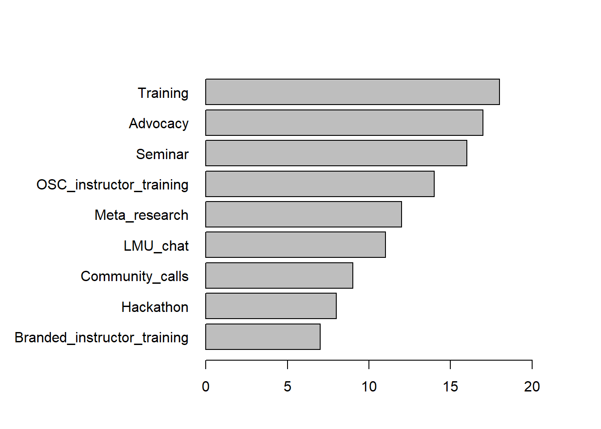
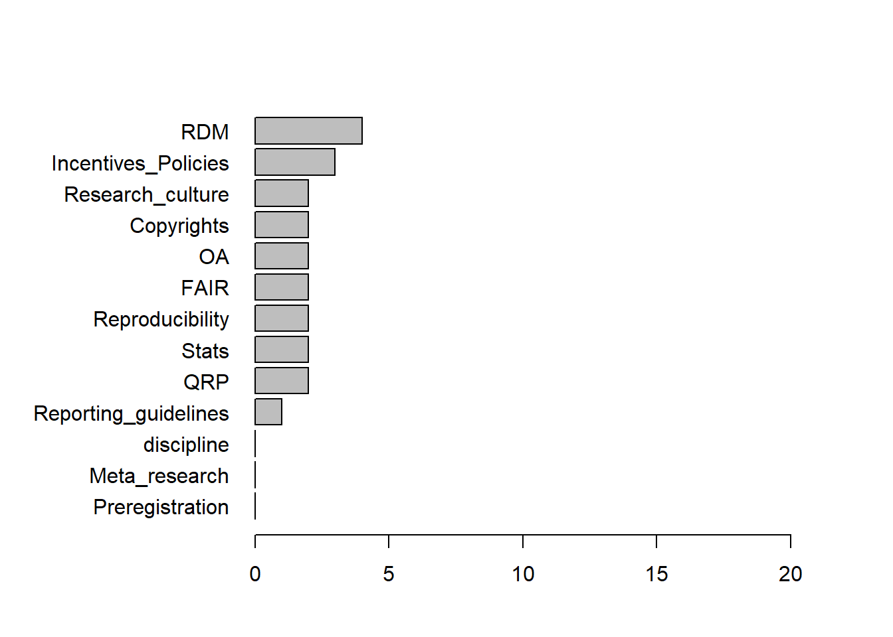
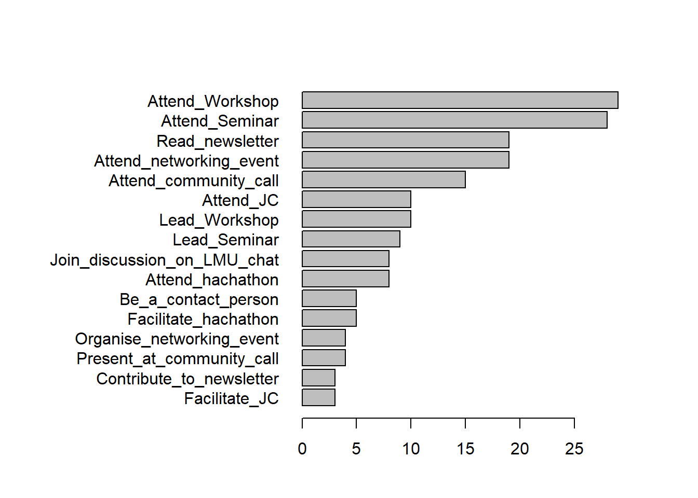

OSC survey results 17.11.2022
Descriptive statistics
Total number of participant in the OSC survey: 60
Survey Resuts
Participants
OSC affiliation
No unknown Yes
37 5 18 Organisation location
Germany LMU Munich World
13 41 5 1 Discipline
Art, humanities, history, linguistics, and culture science
8
Biology, Chemistry, Geosciences
5
Law, Economics, Business Administration
3
Math, Statistics, Informatics, Physics
7
Medicine, Veterinary medicine
10
Social sciences, Psychology, educational sciences
26 Career stage
BSc MSc other PhD PI Postdoc
2 3 2 22 12 8
Supportstaff
11
Consultant
1
Doing applied research, evaluatoins and policy briefs at a federal ministry
1 Subset for OSC members or LMU only?
[1] "No"[1] "No"Activities
‘What activities would you like the OSC community to undertake?’

Other activities
Networking with and interface to relevant institutions outside LMU and knowledge transfer into LMU;
1 Topics
‘Which topics would you be interested to hear about in talks/workshops/seminars?’

Other topics and specific discipline
clinical studies in medicine
1
It would be important to actively involve non-empirical departments and offer low-threshold information and networking
1
phonetics, where sensitive data like speech acoustics are recorded.
1
Psychology
1
communication of best practices from different disciplineswithin LMU
1 Duration
‘What length of events would you consider joining?’

Participation
‘In what way would you prefer to participate in the OSIP community?’

Other participation
Networking and collaborating with other Open Science experts in the Munich area
1 Inclusion
‘If you have any comment(s) about what would help you feel comfortable contributing (e.g., language, online vs. in-person events, synchronous vs asynchronous contributions), please indicate them here:’
character(0)
Comments
‘If you have any other suggestions, please indicate them here:’